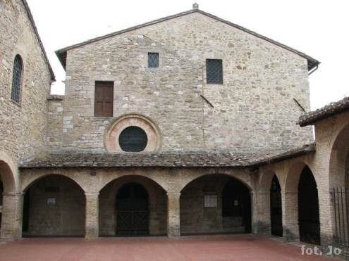

"Francesco vai, ripara la mia casa!
Francesco vai, non vedi che e in rovina?"
"Gdy przechodził koło kościoła św. Damiana, wewnetrzny głos rzekł mu, by wszedł tam na modlitwę. Wszedł więc i gorliwie zaczął się modlić przed wizerunkiem Chrystusa na krzyżu, który przemówił do niego łagodnie i słodko, mówiąc mu: "Franciszku, nie widzisz, że mój dom chyli się ku ruinie? Idź więc i napraw go dla mnie". Drżący i zdumiony odparł: "Chętnie to uczynię, Panie". (Legenda trzech towarzyszy, 13)
Franciszek jak wiadomo zrozumiał polecenie bardzo dosłownie i zabrał się od razu za odbudowę faktycznie walącego się kościółka San Damiano. Środki na ten cel postanowił zdobyć w niekoniecznie pobożny sposób - zabrał ojcu sukna ze sklepu i pojechał sprzedać je do pobliskiego Foligno.
Po jakimś czasie po odbudowie w tym właśnie miejscu osiedliła się Klara - Gołębica o srebrzystych skrzydłach wybrała te szczeliny, by zbudowac sobie gniazdo. Tutaj założyła wspólnotę dziewic poświęconych Chrystusowi. Tutaj załozyła święty klasztor i dała początek Zakonowi Ubogich Pań. (Tomasz z Celano)
Tutaj też powrócił św. Franciszek pod koniec swojego życia, bardzo cierpiący z powodu choroby oczu i stygmatów. "Pewnej nocy, kiedy rozważał wszystkie swoje cierpienia, które na niego spadły, użalał się nad sobą i mówił sobie w duszy: Panie, wspomóż mnie pośród moich cierpień, żebym mógł je cierpliwie znosić. I natychmiast usłyszał w duchu głos: Powiedz mi, bracie, jeśli w zamian za te wszystkie cierpienia i nieszczęścia dano by ci wielki i cenny skarb [...] - czy nie uważałbyś twoich cierpień za nic, za lichą ziemię, kamienie, wodę, wobec tak wielkiego skarbu? Czy wówczas byś się nie cieszył?[...] A zatem, bracie, ciesz się i bądź spokojny pośród Twoich cierpień i ucisków; żyj odtąd w pokoju, jabyś już ze mną był w moim królestwie." (Kompilacja Asyska, 83) Po tym zdarzeniu Franciszek ułożył słynne i piękne słowa Pieśni Słonecznej.
San Damiano znajduje się nieco poza miastem, na zboczu wzgórza San Feliciano. Prowadzi do niego malownicza trasa pośród drzewek oliwnych, a wokół widok jest naprawdę piękny. W środku klasztoru można zobaczyć chór, w którym modliły się siostry i rękopis brewiarza, którego w tym celu używały (według legendy miał on być przepisany osobiście przez brata Leona), refektarz w niezmienionym stanie - wraz z zaznaczonym miejscem przy którym zasiadała św. Klara. W tym właśnie refektarzu modliła się przed Najświetszym Sakramentem, ratując w ten sposób Asyż przed najazdem Saracenów (kolejne legendy chciałyby widzieć ją jak otwiera drzwi klasztoru i z monstrancją w dłoniach zmusza wrogów do ucieczki... prawda nieco inna, ale efekt ten sam:).
Można też zobaczyć kopię krzyża, z którego Franciszek usłyszał głos Pana - oryginał znajduje sie teraz w Santa Chiara. Warto też zwrócić uwagę na witraże przedstawiające Franciszka oraz Klarę i niesamowicie piękny wizerunek Chrystusa na krzyżu wiszący w jednej z kaplic. W innej - niedokończone freski.
Z kolei zupełnie pusta, prostokatna sala to dormitorium sióstr. Tu spały na gołej ziemi. W rogu widać kwiaty - to tutaj 11 sierpnia 1253 r. zmarła św. Klara, wypowiedziawszy słowa:
"Idź w pokoju, bo masz dobrego przewodnika na drogę. Idź, gdyż Ten, który cię stworzył, także cię uświęcił. Zawsze cię strzegł i kochał czułą miłością, jak matka kocha swoje dziecko. Bądź błogosławiony, mój Panie, za to, żeś mnie stworzył."
